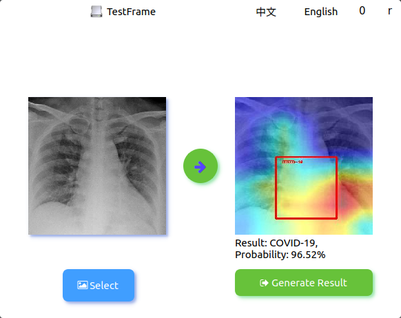
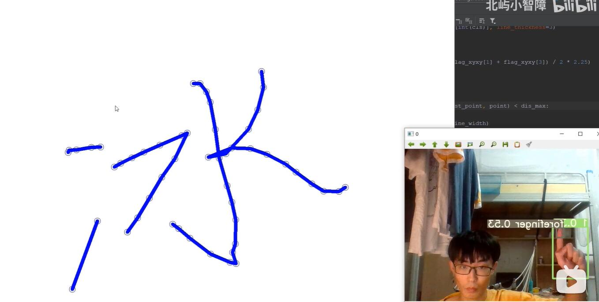
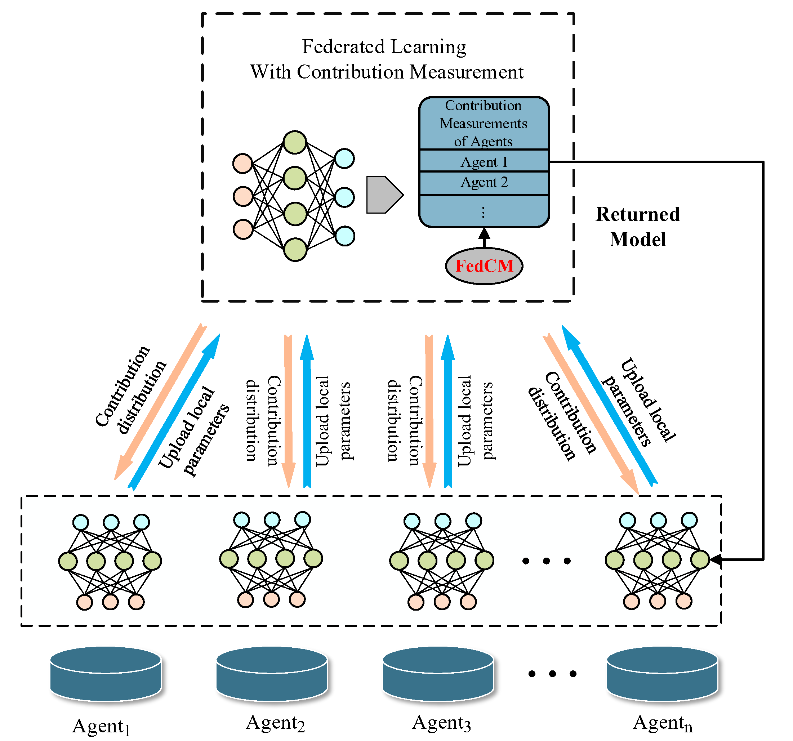
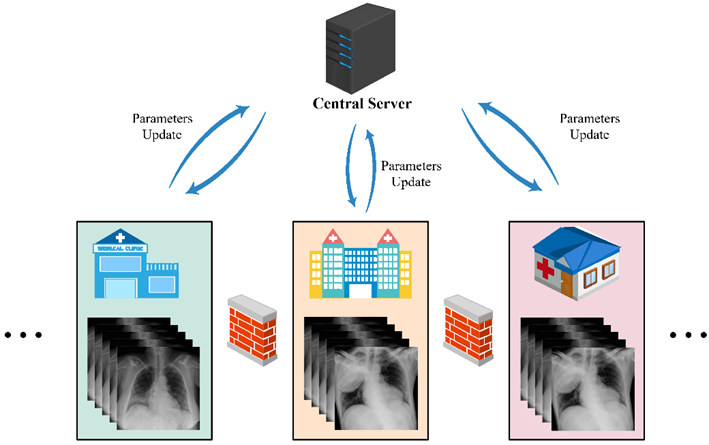
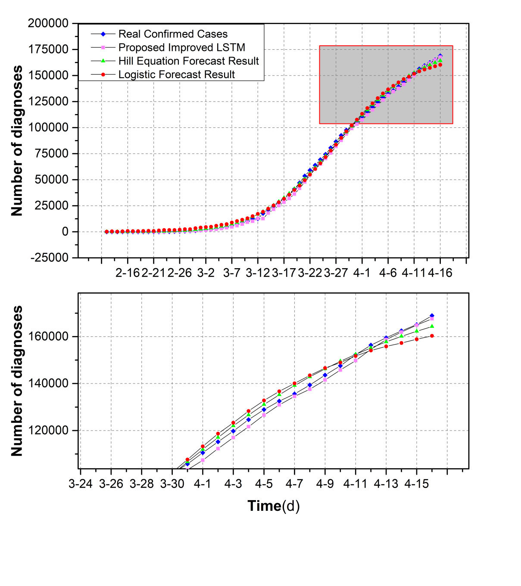

Yan Bingjie (闫冰洁)
B.S. student on Federated Learning, 3D Vision and Robotics
I am a B.S. of the School of Computer Science and Cyberspace Security, Hainan University. My research includes federated learning, 3D vision and robotics.
Link:
 GitHub,
Bilibili,
Blog
GitHub,
Bilibili,
Blog
Contact:
bj.yan.pa@qq.com
CV:
 CV(CN),
CV(EN)
CV(CN),
CV(EN)
Project Highlights
Fed Medical
FedMedical is a medical image recognition software developed based on PaddleFL, using a federated learning architecture for training and GradCAM for visual annotation, and finally generate report generation automatically.
[code]
|  |
Mid Air Draw
Mid Air Draw comes from my small idea, a project based on YOLOv5 gesture recognition and finger recognition to achieve mid-air painting.
[code]
[demo]
|  |
Publications

FedCM: A Real-time Contribution Measurement Method for Participants in Federated Learning (B. Yan, B. Liu, L. Wang, Y. Zhou, Z. Liang, M. Liu and C. Xu), In IJCNN, 2021, Oral.
To appear.
[code]
[arXiv]

Experiments of Federated Learning for COVID-19 Chest X-ray Images (B. Yan, J. Wang, J. Cheng, Y. Zhou, Y. Zhang, Y. Yang, L. Li, H. Zhao, C. Wang and B. Liu), In ICAIS, 2021.
To appear.
[arXiv]

An Improved Method for the Fitting and Prediction of the Number of COVID-19 Confirmed Cases Based on LSTM (B. Yan, J. Wang, Z. Zhen, X. Tang, Y. Zhou, G. Zheng, Q. Zou, Y. Lu, B. Liu, W. Tu and N. Xiong), In CMC, 2020.
[bib]
[pdf]